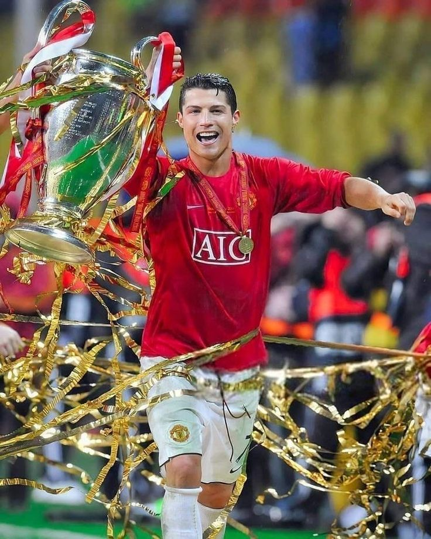

Manchester United F.C.
Cristiano Ronaldo
Numbers from Ronaldo's two spells at Old Trafford — where he became a global superstar.
| Category | Number |
|---|---|
| Seasons | 8 (6 in first spell, 2 in second spell) |
| Matches | 346 |
| Goals | 145 |
| Assists | 64 |
| Hat-tricks | 3 |
| Premier League titles | 3 |
| UEFA Champions League titles | 1 |
| FA Cup titles | 1 |
| League Cup (EFL Cup) titles | 2 |
| FIFA Club World Cup titles | 1 |
| FA Community Shield titles | 2 |
| Ballon d'Or awards at Manchester United | 1 (2008) |
| Premier League Golden Boots | 1 (2007–08) |